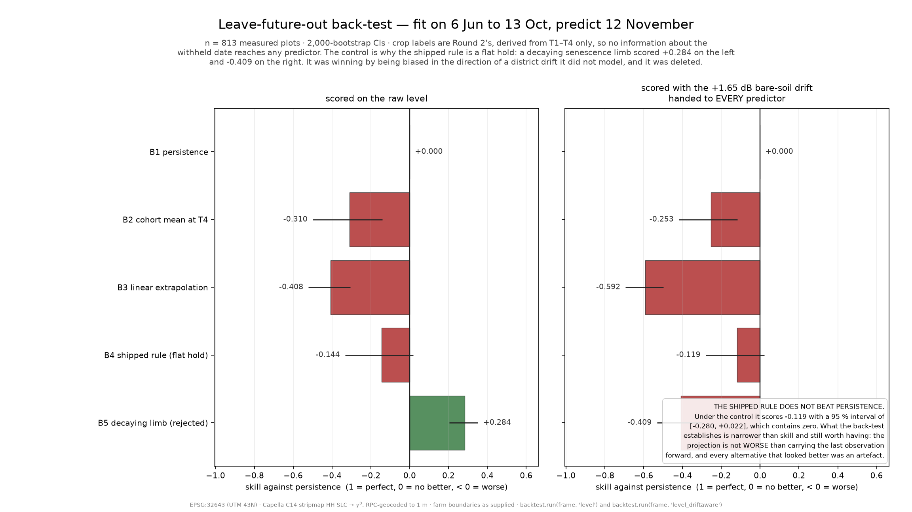

The problem, stated exactly. Forecast final yield at harvest for each of 966 plots from six Capella X-band HH passes spanning 6 Jun – 12 Nov 2025, plus a village rollup by crop. The median plot is 0.27 ha. There is no ground truth, no leaderboard and no scored metric — a panel scores the submission against a published rubric. That inverts the usual priority: with no label to fit, model capacity buys nothing that can be checked, so the effort goes into controls, held-out tests and an honest uncertainty budget instead. Everything below follows from that one fact.
A deliberate choice, not a shortcut. With no ground truth and no scored metric on this AOI, a CNN has nothing to regress onto and an ensemble has no out-of-fold estimate to weight by — a learned model here would be fitted to its own assumptions and could not be caught doing it. Round 2 measured that failure directly: within a cohort, its health index and its yield estimate correlated at exactly 1.000 — one ranking wearing two names. So Round 3 ships one modulation term and fewer modules than Round 2, not more. The radar ranks plots inside a crop cohort; the published state yield sets where the cohort sits.
No observed yield exists for these 966 plots, so no error metric against yield is available to us or to the panel. Rather than report a proxy dressed as accuracy, the work is scored on five things that can be measured, each of which can fail:
Assumptions the forecast rests on. Y_ref is the DA&FW 3rd Advance Estimates for Gujarat kharif 2025-26 — the latest published as of 2 Sep 2026; Final Estimates for 2025-26 do not exist. No district uplift is applied, leaving maize and cotton conservative by a known sign. Cotton's canopy is held flat, not decaying, past the last pass. Tier-2 cohort sizes come from a district crop mix, so three of five cohorts are sized by an external prior — and the uncertainty budget carries a row for it.
Data-quality issues found and handled. The Overview promises an expanded set of villages; the shapefile holds one (Sokhda, ID_1 = 22), so a 500 m zone grid was added to give the rollup more than a single row. It says crop classification is carried forward; the shapefile has five fields and none is a crop, so labels were re-derived. FID is the only stable key — id is 1.0 on every row and one attribute has an empty name and all-null values. Ten parcels enclose under 1e-6 ha and 13 are MULTIPOLYGON; all keep a row, and area weighting stops the degenerate ones voting. The 20250619 folder holds a byte-identical duplicate of the T1 SLC, so filenames are built from the folder stem and never globbed. T6 carries a flat +4.28 dB sensor offset across the scene's 39 dB brightness range — corrected on invariant targets chosen from T1–T3 and scored on the two scenes that took no part in choosing them: 4.01 dB apart before correction, 0.27 after. 153 of 966 plots are not fully observed (82 interpolated from their own dates, 71 imputed from measured neighbours), flagged per plot; the back-test scores only the 813 measured.

| Quantifiable progress | Result | What it establishes |
|---|---|---|
| Shipped rule vs. persistence, 30-day horizon, under the drift control | −0.119 [−0.280, +0.022] | Does not beat persistence; the interval contains zero. Reported as it stands. |
| The same experiment at the longer horizon | +0.140 [+0.071, +0.202] | Positive at 60 days against −0.180 at 30, contradicting our pre-registration: the driver is phenology, not horizon length. |
| Reserved 12 Dec scene, read by no model module — cotton NDVI vs. the other four | 0.690 vs 0.474–0.532, p = 1.26e-11 | A SAR-only label picked the right plots on a scene it had never seen. |
| Canopy sign, differenced on both instruments, n = 813 | rho +0.569, block bootstrap [+0.508, +0.618] | Greener is brighter here — we had pre-registered the opposite sign on four crops of five. |
| C-band witness — cotton over 15 Nov – 21 Dec, the window held flat; and the 6-pass season integral against the 13-pass one | +0.985 dB rho +0.915, n = 956 |
Cotton is the only cohort above its own June soil after 12 Nov, and rising, so the flat hold is not optimistic. The second reading prices the six-date premise. |
| Null ablation — set a() ≡ 1 and re-run the whole chain | 910.1 t (1.8 %), median plot 11.8 % | The radar term redistributes within a cohort; it does not set the level. |
| Uncertainty budget, priced by re-running the chain under each source | external 150.9 t vs radar 9.5 t | Reference ±89.4 t, crop mix ±61.5 t, labels ±6.8 t, speckle ±2.7 t. Somebody else's numbers dominate. |
Validation note. The template asks for a predicted-vs-ground-truth plot and an MAE/R² on held-out plots. Neither exists for this AOI, and we are not going to manufacture one. Every number above is instead a temporally held-out split — the 12 Nov SAR pass and the 12 Dec / 16 Jan optical scenes are withheld from the fit and read only by the validator — or a comparison against an independent instrument. Where the result is negative, as the 30-day skill is, it is printed negative.
Immediate (next 10 hours). Assemble the Kaggle Writeup — the ≤2000-word brief, all 15 figures with cover.png as cover, the generated notebook as a public resource — and confirm both attached datasets resolve on Kaggle (round2_crops.csv for the back-test labels, and the shipped C-band table so a judge's run needs no network). One final Kaggle execution compared line-by-line against the local run log; the last comparison matched 51 of 51 signature lines. Refinement: no new model capacity is planned — a decision, not a shortfall, since with no labels added capacity cannot be validated. The horizon curve says the rule fails where the harvest has already happened, so a crop-calendar prior is the one improvement the evidence points at — recorded as future work, not rushed in unvalidated.
Final output. A deterministic pipeline (src/ plus a notebook generated from it, so the two cannot disagree), three schema-gated CSVs, 15 figures rendered by the run from its own delivered tables, a ≤2000-word brief with every number traced to the run log, 53 passing tests, and a development log that records contradicted predictions as findings.
Code. https://github.com/sumitjadhav1703/SAR-Crop_Yield_Forecasting
— modules, generated notebook, tests, run log, development log.
Kaggle notebook:
Data. Capella C14 stripmap HH SLC ×6, 6 Jun–12 Nov 2025 (competition; EPSG:32643, RPC-geocoded to 1 m) · Sentinel-2 L2A via Earth Search v1, tiles 43QBE/43QCE · Sentinel-1 IW RTC γ⁰ via Planetary Computer, 16 passes 12 Jun–21 Dec 2025, validation only · NASA POWER PRECTOTCORR at 22.4254 N, 73.1567 E, 1995–2025 · CGWB Vadodara brochure. Ground truth: none exists for this AOI; reference yields are DA&FW five-year estimates 2021-22 to 2025-26. All external sources are free and re-obtainable without registration, as the rules require.
References. Inoue, Sakaiya & Wang (2014), Remote Sensing 6(7):5995 — X-band σ⁰ tracks panicle biomass best, and proposes the within-image reference our departure follows. Prashnani & Justice (2026), Remote Sensing 18(8):1238 — cotton's phenology is extended where cereal–legume crops compress: support for the two-tier split.